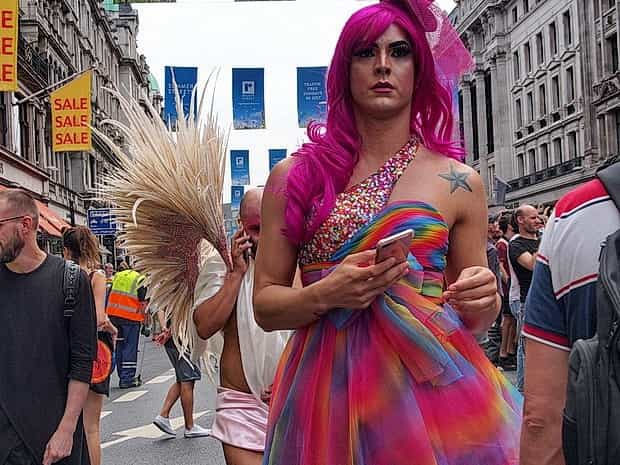

In a world with little real-life drama and much free time, most people are more influenced by TV and Netflix than they are by their friends. Unfortunately, the world they see in these shows is a perverse and corrupt one. Men and women are shown as competitors, not as collaborators. The female’s impulsive, emotional reaction is justified rather than denigrated. The empowered feminist slut is lauded for her unnatural behaviour, while the protective husband is criticised for following his instinctive response.
The addictive fast-paced action of these shows is a compelling alternative to real social interaction. When they first came about, this is all they were. Nowadays, people spend so much time with these shows that they are the main source of information and role models for most of the population. One or two generations is all it takes for a culture to forget what real life is like.
In order to attract viewers, drama producers make their shows an extreme version of what happens in real life. It is no secret that the murder rate in TV soaps is approximately 1000X greater than real life. While some of our society’s members do meet their end through violent means, such as car crashes, gang violence, homicide, suicide, and horrific accidents, the leading causes of death are rather mundane: cancer, heart disease and stroke.
Violence on the screen has been going on for a long time. It has probably not altered the rate of violent crime. Statistics show a temporal fluctuation in this, but a general downward trend. This is because there remain strong disincentives to violence: notably prison, loss of employment, and social ostracism.
Suitable for kids of all ages
Having exhausted the possibilities of violence for creating engaging storylines, TV producers have started using sexually deviant behaviours to create interest. The problem with this, as with any drug, is one of tolerance and escalation. Something which, when first shown on the air is inconceivably miscreant – a housewife having sex with the plumber, a gay kiss, a flamboyant homosexual parading his G-stringed behind in front of children at a gay pride parade – gets repeated and copied in other dramas or series.
It is less shocking each time, but still gets viewers interest peaked for a while. Incidentally, the same effect occurs in guys who watch porn. The interest induced by such scenes declines, but producers continue to include such acts to prevent withdrawal symptoms in their audience (boredom) which would cause a reduction in viewership. In a few short years, it is normalised and has become acceptable public practice.
The film industry might be full of gay feminists with an agenda to push, but they would show the kind of garbage they do even if they were politically neutral, because they have an incentive to push the bounds of public acceptance as a cheap way of being more exciting.

Potentially unsuitable for kids.
To counter this trend, I suggest a set of guidelines that film and TV producers should abide by.
- Character identities and plotlines should be an honest representation of their gender, age and racial demographic. Visual entertainment should not be used to socially engineer false paradigms.
- The majority of female characters should have feminine traits and lead a life commensurate with their natural talents of caring, home-making, and child-rearing. The happiness and life-satisfaction of women who choose this path should be apparent to the viewer.
- Female characters who diverge from conventionally feminine traits should be shown to lead miserable lives as a result.
- Extra- and pre-marital sexual relations should occur infrequently, and only clearly degenerate females should be involved.
- The ratio of confirmed heterosexual characters to non-heterosexual characters should be at least 20 to 1.
- The non-heterosexual population portrayed should have a higher-than-average incidence of paedophilia, degenerate behaviour, and venereal disease. Flagrant homosexuals should show these traits more than those who keep their homosexuality private.
- Nearly all characters who are powerful, inventive, or creative should be white heterosexual males.
- Crime should have a similar demographic profile to real life: black men more involved in gang crime; terrorists mostly Muslim; corruption most prevalent among those from the Indian sub-continent, etc.
- Most police officers should be white men. They should usually prevail over the bad guys.
- The dignity of femininity should be emphasised. “Strong and empowered” women should be mocked for their attempted subversion of nature.
- Jokes should be at the expense of homosexuals, feminists and Islamic extremists; not at the expense of white men, feminine women, or church-going grandmas.
Those who complain that this will lead to boring TV are both wrong and misguided. With a little thought, there are plenty of ways to create deep storylines that achieve appeal through nuance rather than sensation. Moreover, is it really a bad thing if TV is a little less exciting? Maybe a less addictive digital screen will lead to a more social and healthy society.
If culture is the backbone of a civilised society (which it is) and a people become the image of what they see (which they do), then it is essential to get this right. Showing the population what we wish them to be is the best way for them to change.
Read More: The John Wick Film Series Is A Modern Magnum Opus Of Red Pill Cinema